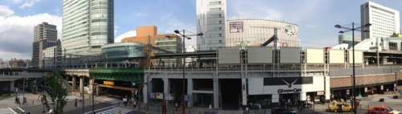
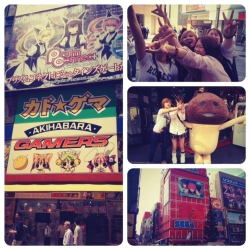
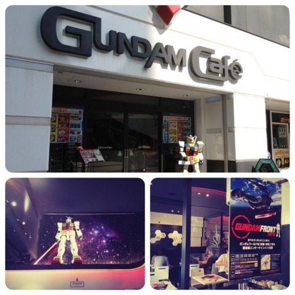
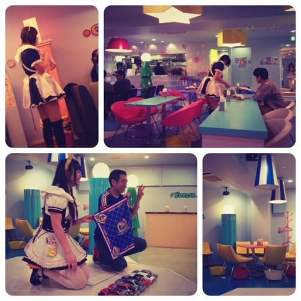

School’s out and some of us geeking out by strolling around Akihabara, the Otaku heaven, or hell, depending on how you look at it. For me, it was kind of both. Heaven because there are just so many toys and games I could browse for hours, and hell because the challenge is to get out of there empty-handed. So far, I’ve never been able to resist the temptation.

This was only an example of what I meant by both heaven and hell.

Having said that, there’s always an exception to every rules. The Gundam Cafe, was pure heaven. Granted, the food there may not win any Michelin stars but who cares when you can enjoy your meal in a universe full of Gundam artworks and characters? Plus, you get to enjoy some of your grub in the shape of your favorite Gundam character. Double Win!

And this, on the other hand, was pure hell. The Maid Dreams cafe obviously catered exclusively to males with either Oedipus complex or those belong in Hikikomori* category. Served mainly by girls dressed in mini maid-like outfit, the cafe could probably be called as pervert heaven. This is one aspect of Japanese phenomenon that I could never grasp. Which part of adoring young girls or adult dressed as little girls that is not disturbing? And this is apparently a behavior widely acceptable in Japan and there’s absolutely nothing wrong with it. There are even scores of adult Manga that exclusively indulge such perverted behavior. I, of course, beg to disagree.
–
For further reading on Hikikomori, read Michael Zielenziger’s ’Shutting Out the Sun: How Japan Created Its Own Lost Generation’.